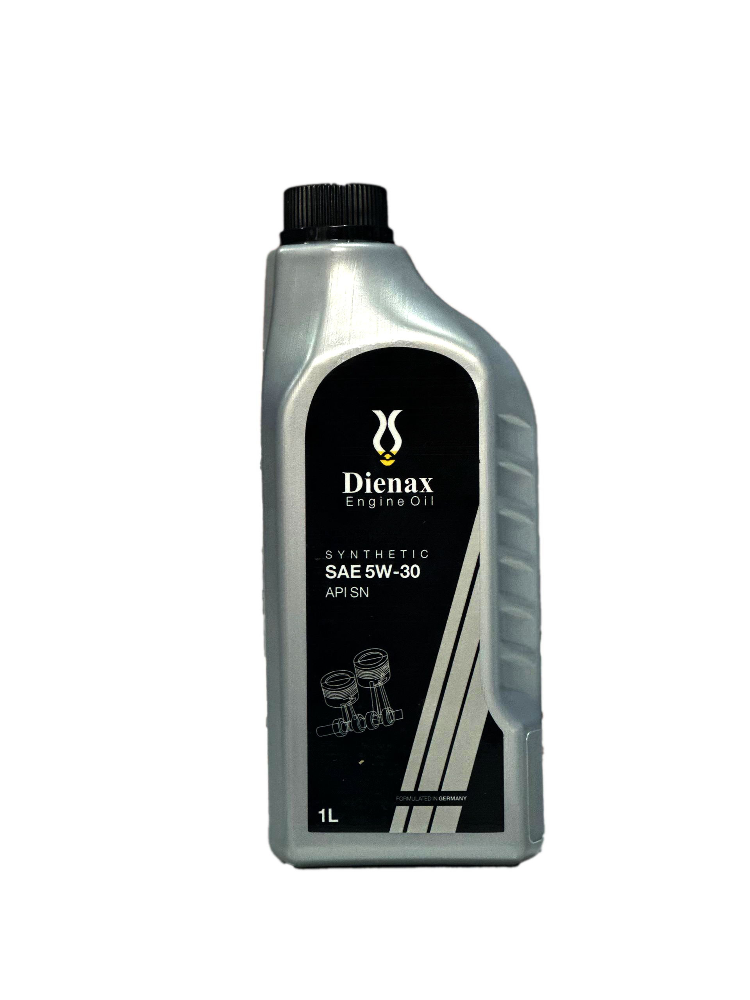
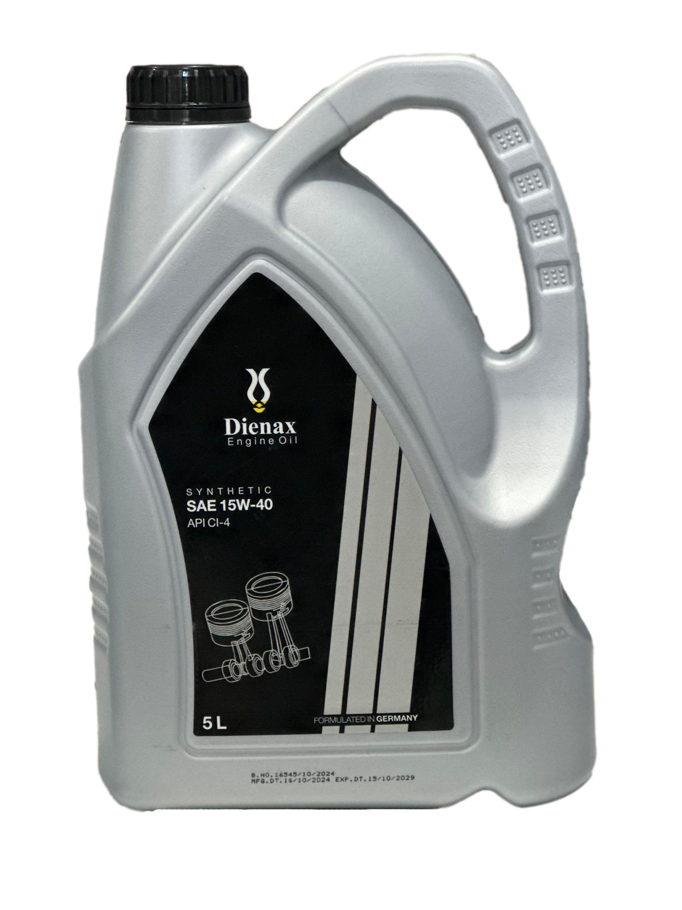

Dienax 20W-60 API CI-4
High-viscosity engine protection for demanding road conditions.
Use: Heavy-duty diesel and mixed fleets
Performance: Strong wear and oxidation resistance
Pack: 5L and bulk options
Trusted Lubrication Solutions
High-performance formulations engineered for heat stability, wear protection, and long engine life across demanding road and industrial conditions.
DIENAX ENGINE OIL is focused on delivering reliable lubrication products for automotive fleets, transport operators, workshops, and industrial users. Our product development emphasizes durability, thermal control, and efficiency in real-world operation.
From city traffic to heavy-load logistics, DIENAX helps reduce friction losses and supports consistent engine protection over extended drain intervals.
Default section is Engine Oil. Select another section to load its full product lineup.
High-viscosity engine protection for demanding road conditions.
Use: Heavy-duty diesel and mixed fleets
Performance: Strong wear and oxidation resistance
Pack: 5L and bulk options

Modern synthetic formulation for cleaner and smoother engines.
Use: Newer gasoline engines
Performance: Better cold start flow and fuel economy
Pack: 1L, 4L, and 5L

Reliable multigrade oil for commercial transport operations.
Use: Trucks, buses, and diesel utility vehicles
Performance: Soot control and engine cleanliness
Pack: 5L, 10L, and 20L
Low-friction oil tailored for fuel-efficient engines.
Use: Hybrid and compact gasoline cars
Performance: Fast lubrication at startup
Pack: 1L and 4L
Anti-wear hydraulic fluid for light to medium duty systems.
ISO Grade: VG 32
Use: Hydraulic pumps and control units
Benefit: Smooth response and oxidation control
Balanced viscosity for general industrial hydraulic equipment.
ISO Grade: VG 46
Use: Excavators, presses, and lifting units
Benefit: Better anti-wear and rust protection
Heavy-duty hydraulic oil for high load and warm climate use.
ISO Grade: VG 68
Use: Construction and mobile hydraulics
Benefit: Maintains film strength under pressure
High-viscosity fluid for slower but heavily loaded systems.
ISO Grade: VG 100
Use: Specialized industrial hydraulic circuits
Benefit: Strong anti-foam and corrosion defense
Automatic transmission fluid for broad passenger vehicle use.
Spec: Dexron III / Mercon
Use: Automatic gearboxes and power steering
Benefit: Smooth shifts and seal compatibility
Multi-application ATF for mixed workshop service needs.
Spec: Multi-Vehicle ATF
Use: Modern automatic transmissions
Benefit: Friction stability and thermal durability
Dedicated formulation for continuously variable transmissions.
Spec: CVT Fluid
Use: Belt/chain-driven CVT systems
Benefit: Stable viscosity and belt grip control
Dual-clutch transmission fluid for rapid and precise shifting.
Spec: DCT Fluid
Use: Wet clutch dual-clutch units
Benefit: Clutch protection and heat management
Reliable braking fluid for standard hydraulic brake systems.
Spec: DOT 3
Use: Passenger car brake and clutch circuits
Benefit: Corrosion control and stable pedal feel
Higher boiling point fluid for stronger braking demand.
Spec: DOT 4
Use: Daily and high-load urban driving
Benefit: Better vapor lock resistance
Performance-oriented brake fluid with high thermal margin.
Spec: DOT 5.1
Use: ABS and performance braking systems
Benefit: Fast response with consistent braking
Dual-purpose fluid for hydraulic brake and clutch circuits.
Spec: DOT 4 compatible
Use: Mixed hydraulic brake and clutch systems
Benefit: Moisture control and seal protection
Each batch is validated for viscosity stability, wear behavior, and anti-foam performance.
Logistics and storage process controls maintain product integrity from production to delivery.
Our team supports product selection based on operating conditions and manufacturer recommendations.
For dealership opportunities, bulk orders, or technical assistance, reach out and our team will respond promptly.